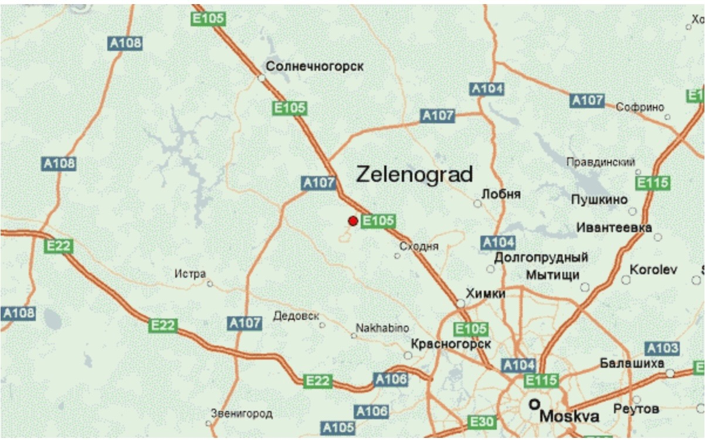

General
Zelenograd: The Soviet Union’s Ill-fated Attempt to Replicate Silicon Valley
Alfred Sarant and Joel Barr, two covert operatives of the Soviet Union within the Rosenberg spy ring,
found themselves entrusted with a mission unlike the typical fare of nuclear espionage.
Their task? The clandestine acquisition of the United States’ most cutting-edge secrets in the realm
of electronics. In 1956, evading the tightening grip of American intelligence, they fled to the USSR,
and within a span of two years, they found themselves presiding over a newly-minted center committed to
propelling the Soviet Union into the forefront of semiconductor technology. Yet, the grand plan was to unravel
before it could truly unfold. They were poised on the precipice of an epic failure. But what factors conspired
to foil their ambitious undertaking?